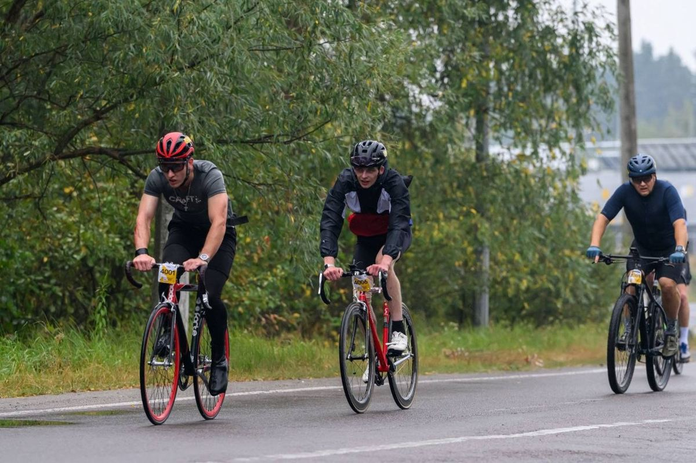

Хто я і чому фікс

Мене звати Артем, мені 26 років, і на велосипеді я катаюся з дитинства. За ці роки в мене було сім різних велосипедів: від першого дитячого до того, на якому я проїжджав сотні кілометрів за день. Але по-справжньому своїм я відчуваю лише один — фікс.
Фікс (fixed gear) — це велосипед з однією передачею, у якого задня зірка жорстко закріплена на втулці. Немає вільного ходу: поки котиться колесо, крутяться й педалі. Перестати крутити педалі на ходу не можна, а гальмувати доводиться ногами. Саме тому на моєму фіксі взагалі немає гальм, і в цьому його сила.
Для мене фікс — це простота, контроль і мінімалізм. Нічого зайвого: рама, два колеса, ланцюг і ти. Ти відчуваєш дорогу через педалі, кожне прискорення і кожне сповільнення залежить лише від тебе. Такий велосипед вчить бути зібраним і уважним. А ще він чесний: ти завжди знаєш, скільки сил вклав у поїздку, бо велосипед нічого не робить за тебе.
Катаюся я двічі на тиждень по місту: дорогою на роботу і на вечірніх велопокатушках. Іноді виходжу на старти — у 2026 році я посів перше місце в категорії «фікс» на «Київській сотці».
До фікса я прийшов не одразу: була аварія, страх і довга пауза. Як я повернувся на велосипед — читайте на сторінці «Історія»
Чому саме фікс
- Простота — одна передача, жодних перемикачів і тросиків.
- Контроль — педалі напряму пов'язані з колесом, швидкість відчувається ногами.
- Мінімалізм — легкий велосипед без зайвих деталей.
- Без гальм — гальмування ногами і скідом.
- Сила в ногах — кожна поїздка стає тренуванням.
- Надійність — мало деталей, тож мало що ламається.
Як виглядає мій велосипед і з чого він складається — дивіться в галереї
У цифрах
| Показник | Значення |
|---|---|
| Вік | 26 років |
| Катаюся | з дитинства |
| Велосипедів за життя | 7 |
| Як часто | 2 рази на тиждень |
| Максимальна швидкість на фіксі | 64 км/год |
| Передача | 52/15 |
| Головне досягнення | 1 місце, «Київська сотка 2026», категорія «фікс» |